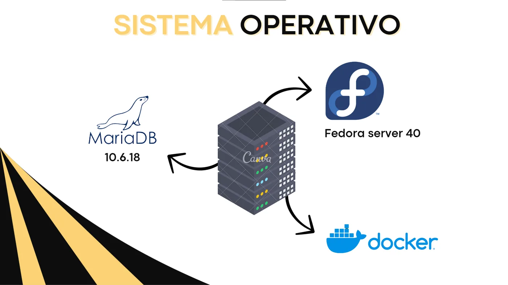

Proyecto de infraestructura
Servidor Fedora con Docker
Configuración de un servidor Fedora con Docker para alojar servicios, bases de datos y entornos de prueba. Incluye trabajo con redes y conectividad entre contenedores.
- Docker y contenedores
- Base de datos en entorno de servidor
- Enfoque en redes y conectividad
